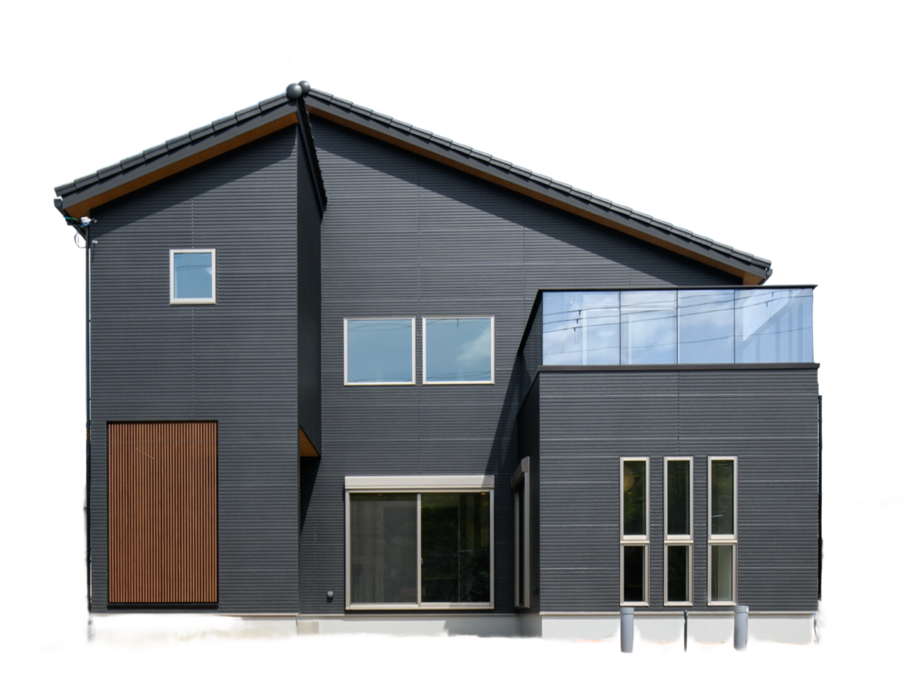
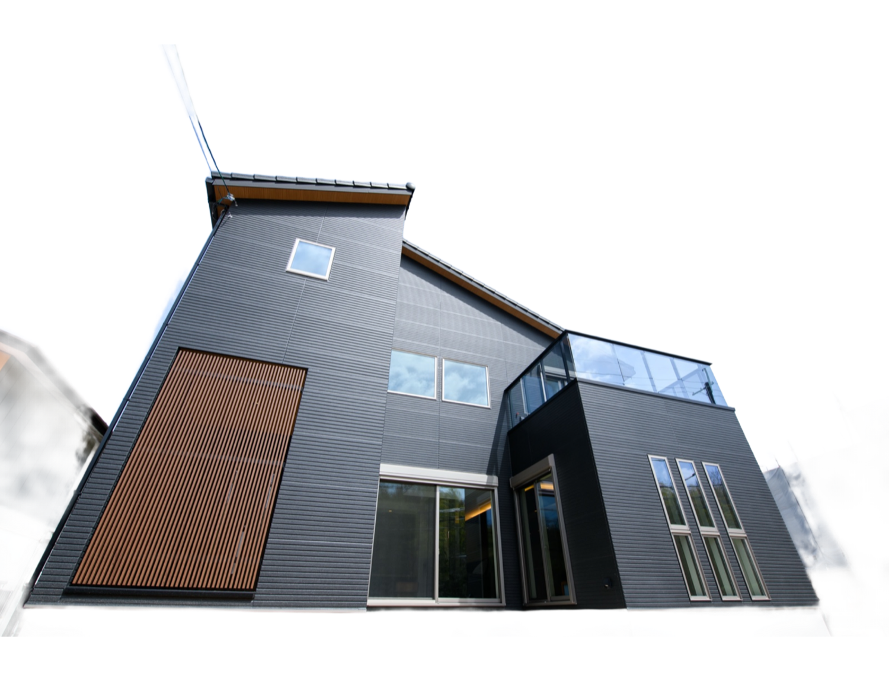
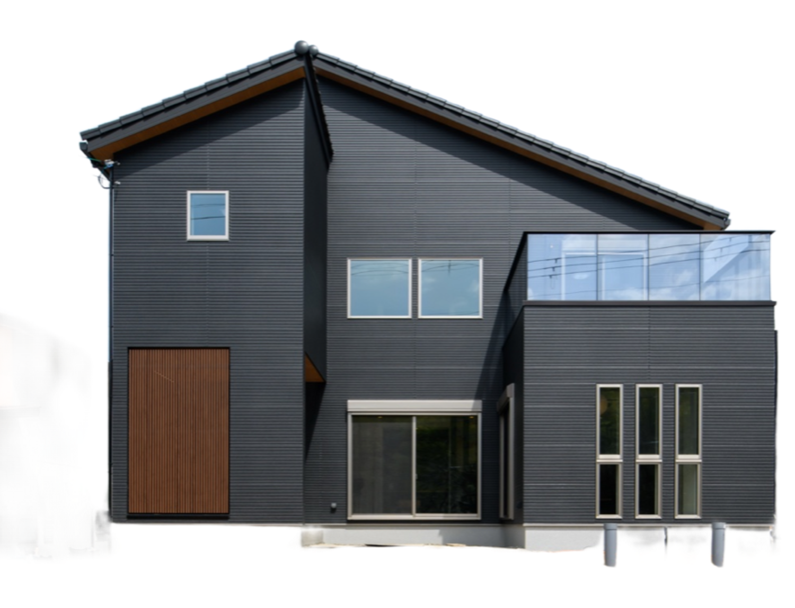
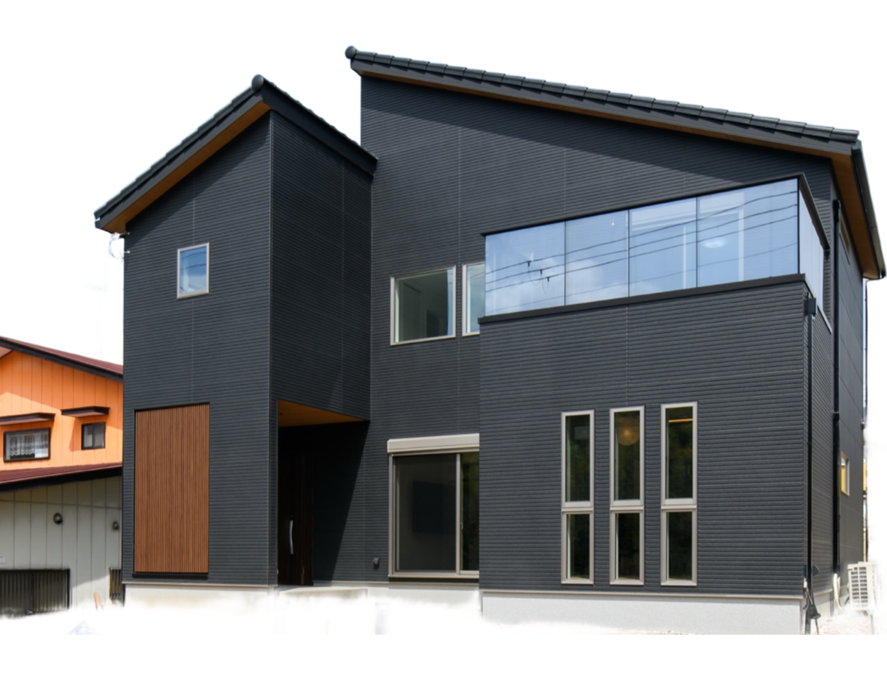

やまとの実写を背景除去して並べ、スクロール量に連動して左→正面→右へ回転させています。3Dメッシュではなく本物の写真そのままなので、壁も窓も一切歪みません。コーポレート品質のまま「動く」を実現する方法です。
下へスクロールしてください




回転の最後で税込価格を重ねる（上のデモの終盤）、角度ごとに「外壁・軒天・バルコニー」の注記を出す、といった演出ができます。撮影枚数を8〜12枚に増やせば、より滑らかな回転になります。